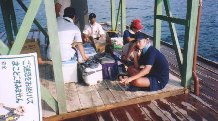
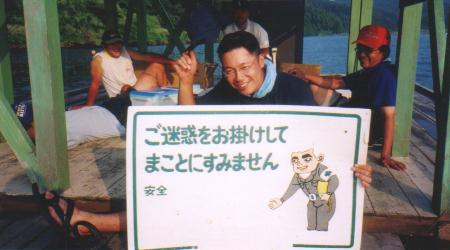
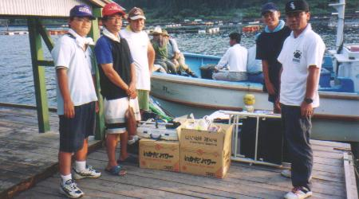
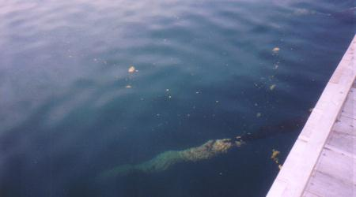
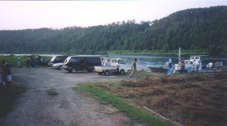
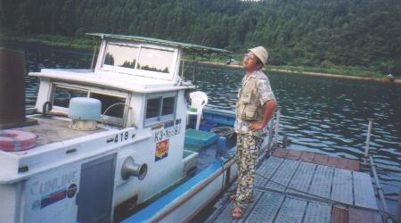

平成１２年度 上田市消防団第十六分団ラッパ班
「能登島における、魚類捕獲調査および海洋視察」 その３
いちにち海の上で過ごすのってとってもいいものです。みんないいカオしてます。持病の腰痛もだいぶ楽になった気がします。 |
|  |
迎えの船は夕５時。なお、体調を崩したり飽きちゃったりした場合は、電話一本で迎えに来てもらうことができます。
キレイサッパリとイカダの掃除も完了し、各方面に釣果を報告するメンバーたち。 |
|  |
今回の旅を企画したヨッスィー君。お疲れ様でした。 |
|  |
迎えの船が到着思しました。今夜はきっとビールがうまいぞ～～！ |
|  |
イカダでウンチをするとこうなります。ウンチって浮くんですねぇ。（めちゃめちゃ長いのはイカダを固定するためのロープですよ・・・）
でもコマセ効果はありません。お魚さんたちは寄り付きもしませんでした。 |
|  |
釣り場となった入り江はこんなところです。こんなところに漁船なんて、ちょっと不思議な風景でした。 |
|  |
ハッタリ釣り師、
今日の釣果
フグ ２
キス １
ウマヅラ １
本命クロダイ １
（ただしチンタ） |
≪前のページ |
●今回お世話になったイカダ「フィッシング箱名」さんのサイト
http://www5.nsk.ne.jp/~fhakona/
●はるちゃんのサイト
http://active.to/16/20000825noto/ ←リンク切れてるよ、はるちゃん・・・ |